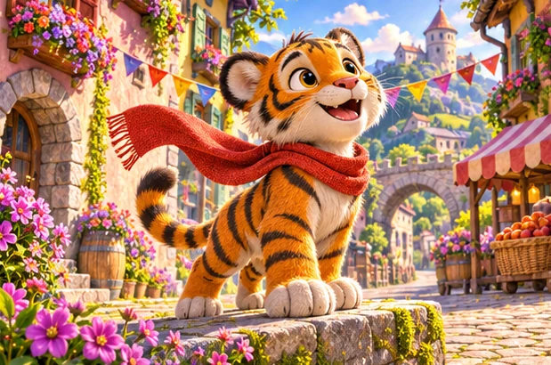
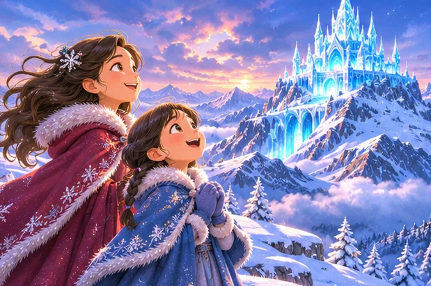
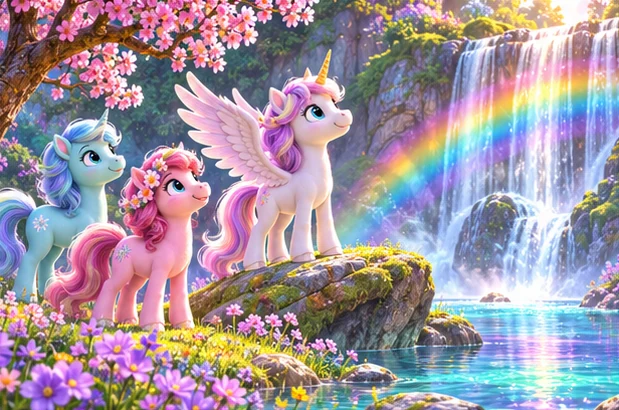
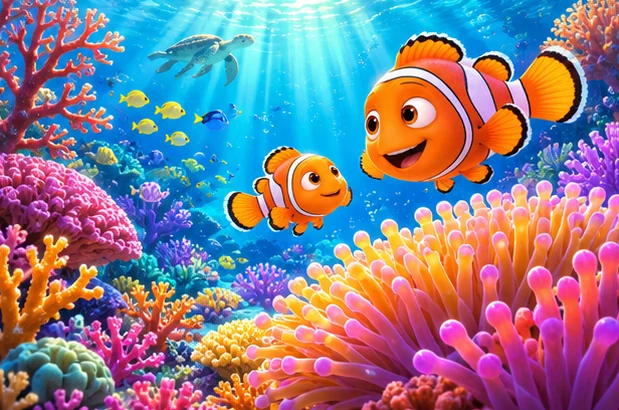
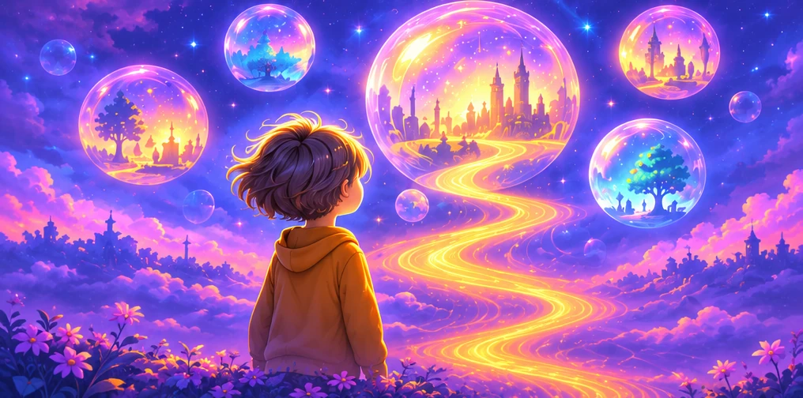
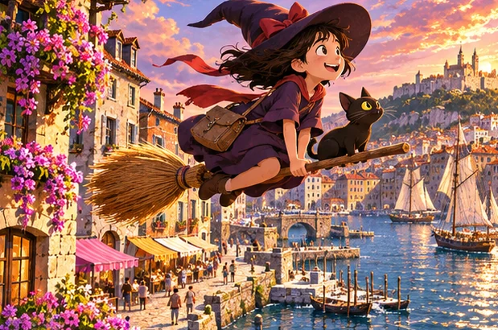

2012·США·25 хв / серія·3+
Daniel Tiger’s Neighborhood
Кожна серія вчить одній навичці: почекати, попросити допомоги, пережити розчарування. Пісенька-підказка повторюється, щоб дитина її запамʼятала.
Де шукатиYouTube, канал PBS Kidsбезкоштовно, англійською
Питання після переглядуЯку пісеньку Деніела ми можемо заспівати, коли ти сердишся?

2013·США·102 хв·4+
Frozen
Сестра йде в кригу за сестрою. Під піснями — історія про людину, яка закрилася, бо боїться нашкодити, і про ту, що не відступилася.
Де шукатиsweet.tv або Megogoліцензія Disney · український дубляж
Питання після переглядуЧому Ельза втекла? Що їй допомогло б замість утечі?

2010·США·22 хв / серія·4+
My Little Pony: Friendship Is Magic
Серіал, у якому дружба — буквально тема кожної серії: сварки, ревнощі, вибачення, уміння не кидати своїх.
Де шукатиNetflixпрацює в Україні, український інтерфейс
Питання після переглядуЯка з поні найбільше схожа на тебе?

2002·США·81 хв·5+
Ice Age
Троє, які терпіти не можуть одне одного, несуть людське дитинча додому — і стають родиною по дорозі.
Де шукатиsweet.tv або Megogoліцензія Disney · український дубляж
Питання після переглядуЯк вороги стали друзями?

2003·США·100 хв·5+
Finding Nemo
Тато переплив океан за сином, а по дорозі навчився довіряти. Немо з хворим плавцем — про те, що «не такий» не означає «не зможе».
Де шукатиsweet.tv або Megogoліцензія Disney · український дубляж
Питання після переглядуЧого тато Немо навчився від Дорі?

2015·США·95 хв·6+
Inside Out
Емоції дівчинки як пʼять персонажів у голові. Головна думка: Сум — не поломка, саме він кличе інших на допомогу.
Де шукатиsweet.tv або Megogoліцензія Disney · український дубляж
Питання після переглядуЯка емоція сьогодні була у тебе за головну?

2016·США·108 хв·6+
Zootopia
Крільчиха-полісменка і лис-шахрай розплутують справу, а заодно свої упередження. Доступна розмова про стереотипи.
Де шукатиsweet.tv або Megogoліцензія Disney · український дубляж
Питання після переглядуЧи бувало, що про тебе подумали неправду, бо «такі, як ти, завжди так»?

2008·США·92 хв·6+
Kung Fu Panda
Товстого панду беруть у воїни, і виявляється, секретного складника немає. Про наставника, який повірив першим.
Де шукатиsweet.tv або MegogoDreamWorks · український дубляж
Питання після переглядуЩо означає «секретного складника немає»?
2007·США·111 хв·6+
Ratatouille
Щур, який готує, і кухар, який не вміє. Удвох вони — одна людина, і це найточніша картинка партнерства.
Де шукатиsweet.tv або Megogoліцензія Disney · український дубляж
Питання після переглядуУ чому ви з другом добре доповнюєте одне одного?

1989·Японія·103 хв·7+
魔女の宅急便
Тринадцятирічна відьма живе сама й раптом втрачає силу. Найкращий мультик про вигорання і про те, що відновлюватися допомагають люди.
Де шукатиNetflixбібліотека Ghibli · українського дубляжу може не бути
Питання після переглядуЩо повернуло Кікі здатність літати?

2014·США·102 хв·7+
Big Hero 6
Хлопчик після смерті брата отримує робота-медика, який наполегливо питає: «Як ти оцінюєш свій біль?». Про помсту, яка не лікує.
Де шукатиsweet.tv або Megogoліцензія Disney · український дубляж
Питання після переглядуЧим Беймакс допомагав Хіро насправді?
2020·США·100 хв·8+
Soul
Музикант помирає за крок до мрії і вчить загублену душу жити. Про те, що «призначення» — не те саме, що життя.
Де шукатиsweet.tv або Megogoліцензія Disney · український дубляж
Питання після переглядуЯкий звичайний день цього тижня був для тебе хорошим?

2021·США·113 хв·8+
The Mitchells vs. the Machines
Тато й донька, які не розуміють одне одного, рятують світ у відпустці. Смішно й точно про батьків, що бояться втратити дитину дорослою.
Де шукатиNetflixпрацює в Україні, український інтерфейс
Питання після переглядуЧого тато не помічав у Кейті?
2005·США·23 хв / серія·9+
Avatar: The Last Airbender
Три сезони про команду дітей, яка зупиняє війну. Рідкісний серіал, де в кожного — своя травма, і де ворог отримує шлях до змін.
Де шукатиNetflixпрацює в Україні, український інтерфейс
Питання після переглядуХто з команди підтримує інших найбільше?